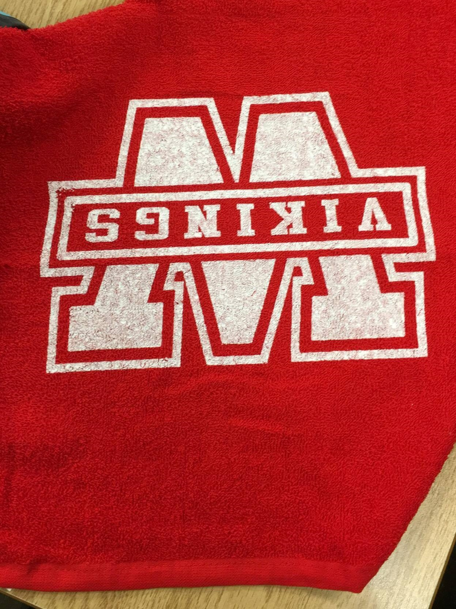

Life in WCI
My life as a student in WCI has been wonderful. Even though it feels like it has only been a short time I was able to be involved in the school community through: CS Club, orchestra, Math club, robotics, and athletics. I have also been devoted to my education here academically. For example, last year I applied for a scholarship by writing an essay. It was an international competition so I was proud when my dedication paid off and I got 3rd place in the region.

Life saver
I became a life saver! I received the Bronze Medallion Bronze Cross, LSS Assistant Instructor certification and volunteered in the Waterloo swimplex during the summer of 2016. During my volunteer I was able to teach a variety of ages and gain experience how to organize and inspire them. Although, there were some difficulties I had to overcome it was a great experience and I feel really proud of myself.
Catalyst 2017
Catalyst! What an amazing and wonderful experience that I want to cherish forever! I was able to learn more about engineering during the summer of 2017. I had great mentors, Nathan and Jade, who really helped me to develop my leadership skills and ability to cooperate with people efficiently. The volunteering opportunity that I had really helped me to improve my skills to lead others and collaborate with people.
Viking football and rugby was a memory I can't forget. Although, every pracetice after school was hard me and my friend made a lot of fun memory that we can share later on. Also, when it comes to the game day
I was so excited becasue I can perform on the field with my teammates instead of sitting in my class. Rugby practice was a lot harder than football. Every wednesday I had to go for practice wich starts at 6:30.